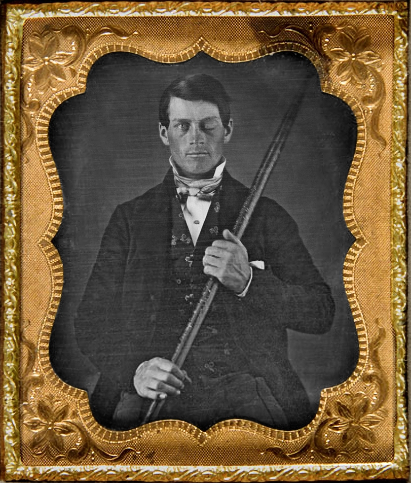
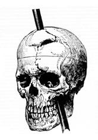

Vermont, 1848.
He survived.
"No longer Gage."
HALF THE STORY
Years later: stagecoach driver, Chile.
The famous version isn't always the true one.
Macmillan & Lena (2010), Rehabilitating Phineas Gage